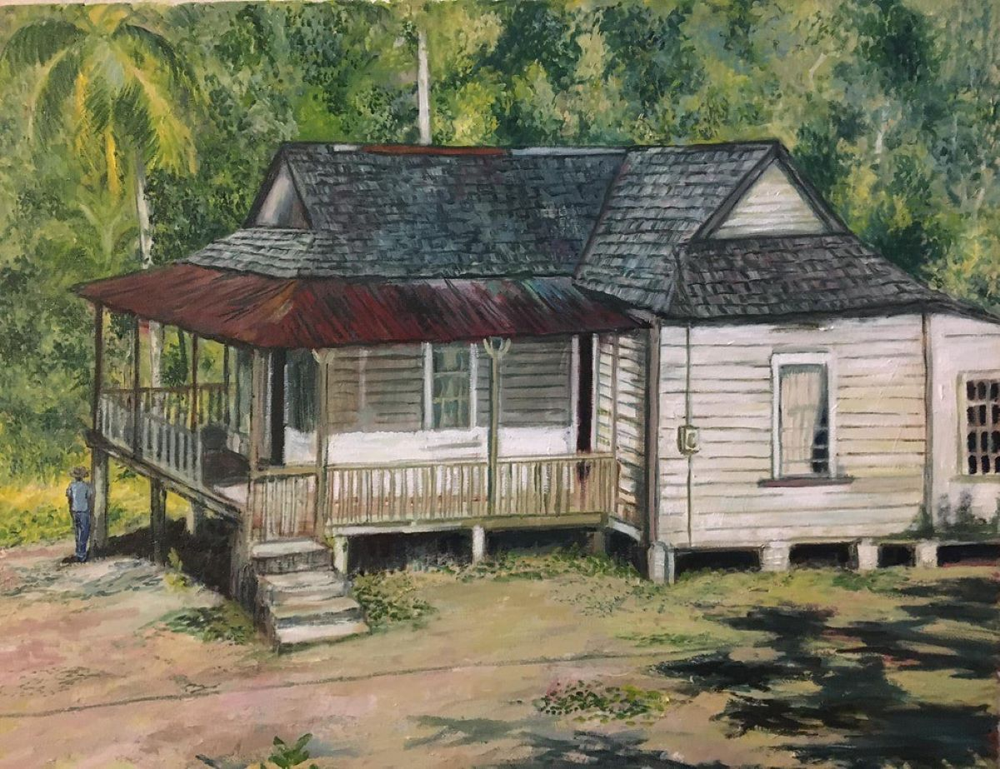
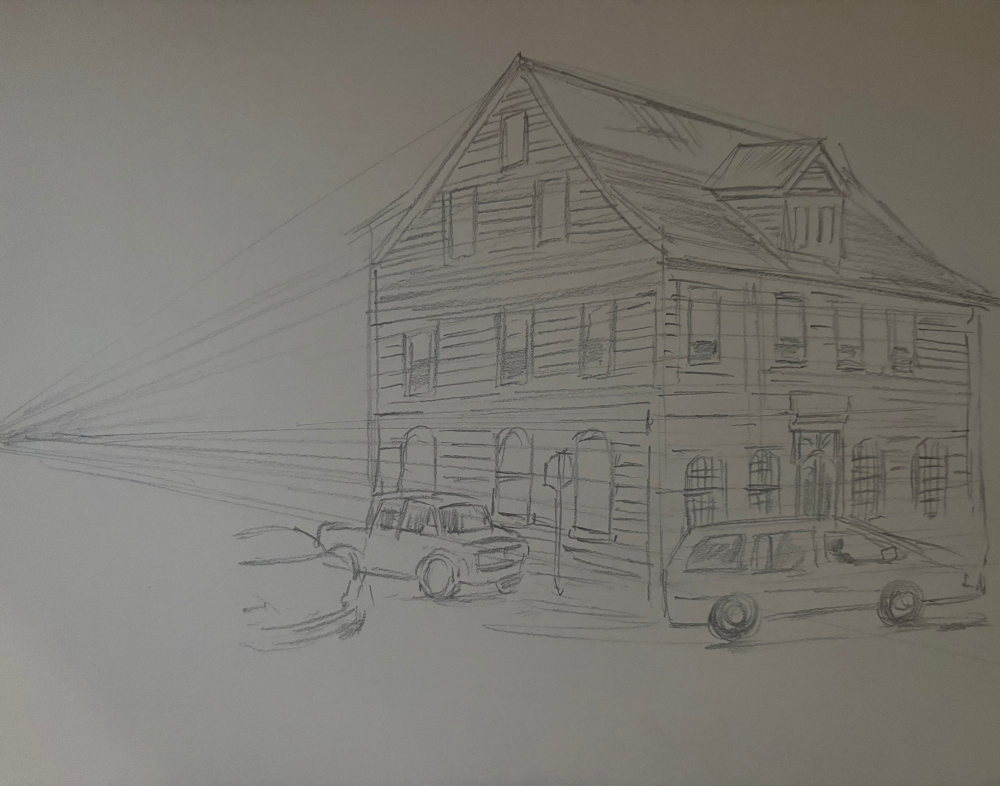

Welcome. I am glad you are here — not just to a platform or a course, but to a different way of seeing. Before we begin a single lesson, I want to tell you something important about what this academy is, and more importantly, what it is not.
It is not a library of videos you passively watch. It is not a step-by-step template you copy mechanically until it looks like someone else's work. It is not another tutorial that treats you as a beginner who needs to be entertained rather than taught. This academy is built on a completely different idea — one I believe will change how you think about learning art entirely.
Before you pick up a brush or pencil, watch how it's done. Live sessions — no editing, no shortcuts, just an artist at work.
Pen and ink, no reference — just imagination and years of observing nature.
Building depth and texture into the tree forms, all from imagination in real time.
You don't need expensive tools. Just talent and a simple pencil.
I am a self-taught artist. I grew up in St. Ann, Jamaica, where the light is generous and the old wooden houses carry decades of character in every weathered board. I did not learn art in a classroom. I learned it by looking — by standing in front of scenes and asking myself, why does that shadow fall exactly there? What angle does that roofline make against the sky? How does the eye travel through this composition?
The answers were always in the scene itself. Not in a textbook. Not in someone else's explanation. The world teaches you to paint if you know how to ask it questions.
Look at that painting. The old wooden house with the rusted zinc roof. The wide verandah, the concrete steps, the small figure standing in the yard. I painted every inch of it — but more than that, I decided every inch of it. Where the light falls. Where the shadows deepen. How far back the viewer stands. What is included and what is left out.
Every one of those decisions is a lesson. And in this academy, you do not just look at the finished painting from the outside. You step inside it.
Here is the core idea of everything we do here. Most art education shows you a finished work and says, now do something like that. We do the opposite. We open the painting up. We show you the skeleton underneath — the perspective lines, the vanishing points, the compositional geometry that holds the whole thing together. And then we let you interact with it.
I work in four mediums — pencil, acrylic, oil, and watercolor. Each one demands something different from you. Each one teaches you something the others cannot.

Each school in this academy is built around my original work in that medium. You will not learn oil painting from a generic apple on a white table. You will learn it from a Caribbean house in afternoon light, where the shadows are warm and the zinc roof catches the sun differently on each panel. The context is the teaching.
This academy will ask something of you that most tutorials do not. It will ask you to slow down. To look longer before you draw. To ask why before you ask how. To resist the urge to copy and instead develop the habit of understanding.
It will also ask you to be patient with yourself. You are not learning a skill. You are developing a way of seeing — and that takes time. Some lessons will click immediately. Others will sit with you for days before they open up. That is not failure. That is how real learning works.
There will also be moments when I am here directly — for feedback, for questions, for the kind of conversation that only happens between an artist and a student who are both genuinely in the work. I look forward to those moments. I have been on the other side of not having a teacher, of figuring it all out alone. I know what a single honest response to your work can do for you.
I built this academy because I believe art education is broken in a specific way — it separates technique from meaning. It teaches you how to hold a brush before it teaches you what you are trying to say. It focuses on imitation before imagination. It mistakes completion for understanding.
My paintings exist. They have a life. They were made by a human hand making real decisions in real light about real places. That reality is the most honest teaching tool I have. Why would I replace it with a diagram when I can invite you inside the real thing?
So that is what this academy is. Not a course. Not a tutorial series. A living, interactive body of work — my life's paintings — opened up so that you can walk around inside them, understand how they were built, and use that understanding to build your own.
Every painting in this academy was made somewhere real, from something I actually saw and felt. The old house in St. Ann. The city street in the evening light. The quiet corner where the afternoon goes golden. These are not exercises. They are pieces of a life.
When you step inside them, I hope you bring your own life with you. Your own eye. Your own questions. Because ultimately, that is what art asks of all of us — not to repeat what came before, but to see what is in front of us and find a way to make it true on paper or canvas.
I am glad you are here. Now let us begin.